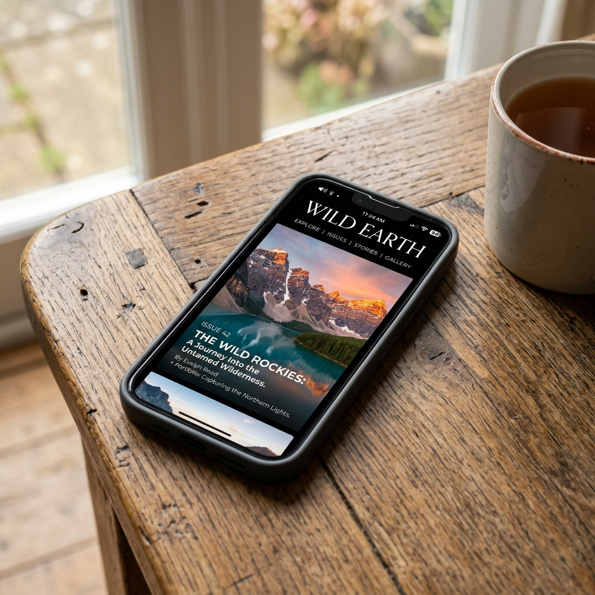
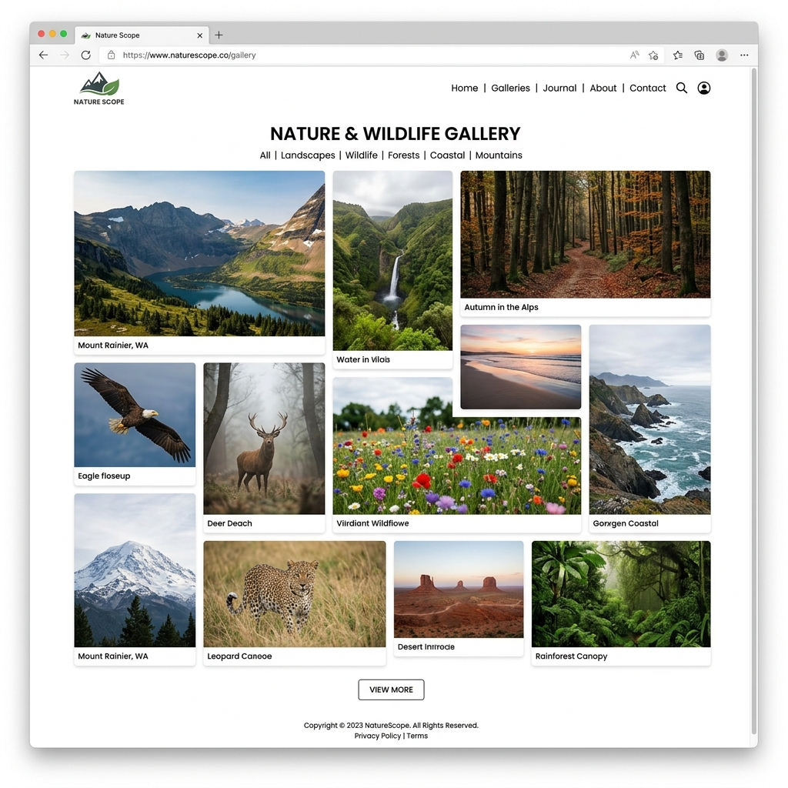
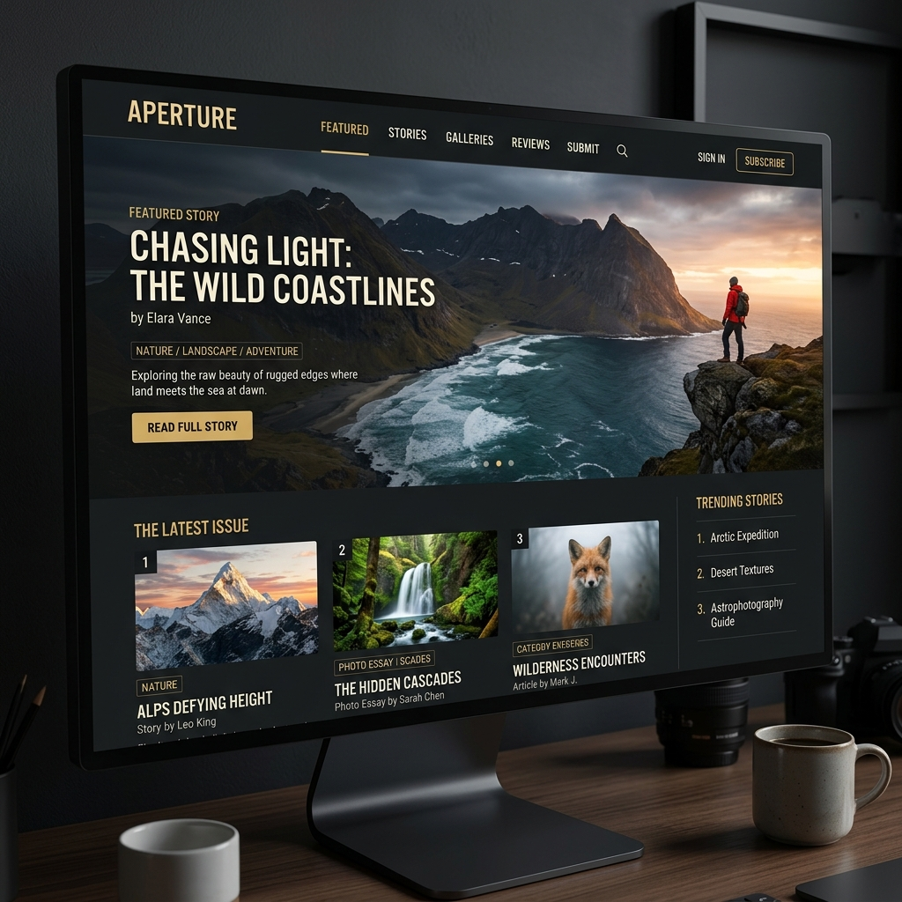

Unsere Vision für die Modernisierung
Ideen und Ausblick für die technische Zukunft der Tollensetaler Stimme.
Das "Headless" Prinzip: Bewährtes bleibt
Das Redaktionsteam ist seit 18 Jahren an den Workflow in WordPress gewöhnt. Wir schlagen vor, diesen Komfort beizubehalten! Durch einen sogenannten "Headless"-Ansatz wird das bestehende WordPress unsichtbar im Hintergrund weiterbetrieben.
Das Team loggt sich wie gewohnt ein und schreibt Artikel. Das neue System greift jedoch im Hintergrund auf diese Texte zu und verwandelt sie automatisch in dieses hochmoderne, blitzschnelle Design. Für den Redakteur ändert sich also nichts – für den Leser ändert sich alles zum Positiven.
1. Offline-Lesen & App-Feeling (PWA)
Keine weißen Ladebildschirme mehr. Artikel gleiten sofort ins Bild, wenn man sie anklickt. Das Surfen fühlt sich extrem flüssig an, ähnlich wie in einer nativen Smartphone-App.
Die Webseite kann zudem wie eine echte App auf dem Homescreen des Smartphones installiert werden. Leser können so Artikel auch im Zug ohne Internetverbindung lesen.

2. Atemberaubende Fotogalerien
Befreit von starren Theme-Vorgaben können wir maßgeschneiderte, wunderschöne Galerien bauen (z. B. im fließenden Masonry-Layout), die die Fotografie perfekt in Szene setzen.
Bilder werden automatisch in moderne Formate (WebP/AVIF) umgewandelt und perfekt skaliert. Sie laden erst in dem Moment, wenn der Leser dorthin scrollt.

3. Eleganter Dark Mode
Auf Knopfdruck lässt sich das Design abdunkeln. Besonders für Fotografie-Liebhaber ist das genial, da tiefschwarze Hintergründe die Farben der Naturfotos noch leuchtender und intensiver wirken lassen.
Zusätzlich ermöglicht das neue System eine blitzschnelle Volltextsuche über das gesamte Archiv von 18 Jahren – direkt beim Eintippen, ohne Neuladen der Seite.
